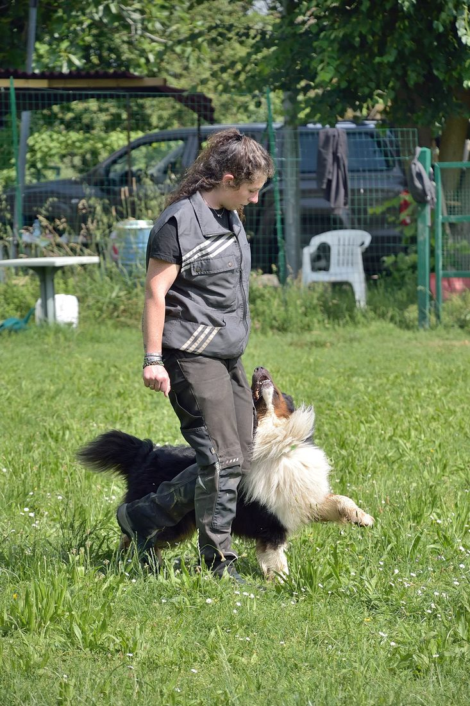

Fondatrice di FullOfJoy ASD, istruttrice cinofila con formazione scientifica. Lavora con i cani dal 2015, dall'educazione quotidiana agli sport cinofili agonistici.

Laureata nel 2013 come biologa specializzata in Ecologia e Conservazione della Natura all'Università di Parma, con tesi dedicata ai lupi. Questa formazione permea il suo lavoro: osservazione rigorosa del comportamento, rispetto dell'etologia, rifiuto delle teorie punitive non supportate dalla ricerca.
Quando non lavora con i cani la trovi nei boschi: fototrappole per selvatici, tracce di lupo, fauna selvatica.
FullOfJoy nasce da Joy, un Husky siberiano. Il legame con Joy, la sua perdita e il desiderio di trasformare quell'esperienza in qualcosa di duraturo hanno portato Silvia a fondare l'associazione. Ogni percorso porta dentro questa promessa: aiutare ogni binomio a vivere una relazione consapevole, serena e felice.
«Non esiste patto che non sia stato spezzato, non esiste fedeltà che non sia stata tradita, all'infuori di quella di un cane veramente fedele.»
— Konrad Lorenz